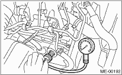

CAUTION:
After warming-up, engine becomes very hot. Be careful not to burn yourself during work.
1. After warming-up the engine, turn the ignition switch to OFF.
2. Make sure that the battery is fully charged.
3. Release the fuel pressure.

4. Remove all spark plugs.
5. Fully open the throttle valve.
6. Check the starter motor for satisfactory performance and operation.
7. Hold the compression gauge tightly against the spark plug hole.
NOTE:
When using a screw-in type compression gauge, the screw (put into cylinder head spark plug hole) should be less than 18 mm (0.71 in) long.
8. Crank the engine using the starter motor, and read the maximum value on the gauge when the needle becomes steady.

9. Perform at least two measurements per cylinder, and make sure that the values are correct.
Compression (350 rpm and fully open throttle):
Standard
1,020 — 1,275 kPa (10.4 — 13.0 kgf/cm2, 148 — 185 psi)
Difference between cylinders:
49 kPa (0.5 kgf/cm2, 7 psi), or less